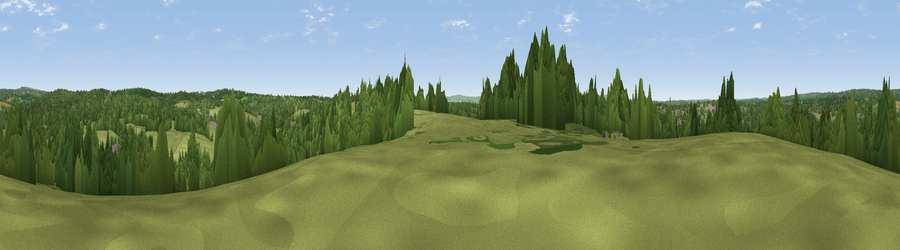

Viewpoint near Framfield
#37870 in England · top 66% of its area beats it · near FramfieldThe view, rendered

A 360° render of this exact spot computed from the terrain model, tree cover and land cover — summer colours, afternoon light, calibrated against photographs of famous viewpoints. Real trees, hedges and buildings will differ in detail.
The panorama
Grey silhouette: terrain skyline in each direction (720 bearings, Earth curvature and refraction included). Dashed green: skyline with trees (+15 m) and buildings (+8 m) as obstacles. Blue strip: how far the ground is visible on each bearing.
Where the view opens
Wedge length = distance to the farthest visible ground on that bearing (vegetation-aware). Rings at 10, 25 and 50 km.
What fills the view
55% grassland · 39% woodland · 4% built-up · 3% cropland
Angular shares of the visible panorama (visual magnitude), not map area. Landscape diversity 0.40 (0–1 Shannon).
Key numbers
More beautiful places nearby
The staircase of upgrades: each row has a higher view potential than everything closer. Driving times are estimates from straight-line distance, calibrated against real road routing — check an actual route before setting out.
| Place | Direction | Drive | Score |
|---|---|---|---|
| Viewpoint near Buxted | NNE · 3 km | ~7 min | 44.0 |
| Viewpoint near Buxted | NE · 3 km | ~8 min | 44.1 |
| Viewpoint near Cross in Hand | E · 6 km | ~13 min | 47.7 |
| Viewpoint near Cross in Hand | E · 6 km | ~13 min | 54.0 |
| Viewpoint near Fairwarp | NNW · 8 km | ~16 min | 54.3 |
| Viewpoint near Rotherfield | NE · 10 km | ~19 min | 54.7 |
| Viewpoint near Upper Hartfield | NNW · 11 km | ~21 min | 59.6 |
| Viewpoint near Glynde | SSW · 12 km | ~23 min | 70.8 |
50.97331, 0.12693 · source: screening · position refined by local search. Computed location — check access rights before visiting.